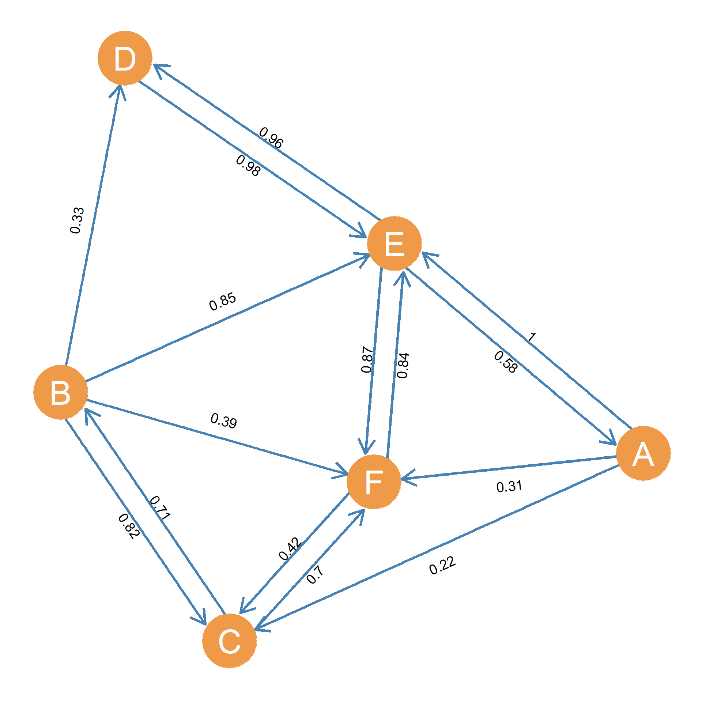

14 From Graph to Matrix
The lessons so far have been dedicated to exploring the various ways social networks can be represented in graph form, and computing metrics directly from graphs. This lesson will focus on using a matrix as a second way of representing networks. More accurately, as noted in the first lesson, matrices are useful way to represent graphs quantitatively, which in their turn, represent networks1
Networks represented as graphs feel quite intuitive to us. Actors are points (nodes) and links or interactions between actors are lines (edges). We feel as if we can get a good sense of the network by looking at the pictorial network diagram, with points representing actors and lines representing pairwise links between actors. Networks represented as a matrix, however, are a bit more abstract. They are far more mathematically useful however. With many tens, hundreds, thousands, or millions of nodes and edges, creating a graph with these amounts of data only results in what network analysts call a “hairball.” Nothing can be understood by looking at a picture.
14.1 Matrices
Thus, switching to representing social networks as a matrix provides us with more analytic leverage. This was a brilliant idea that first occurred to Elaine Forsyth and Leo Katz in the mid 1940s (Forsyth and Katz 1946). When we represent the network as a matrix, we are able to efficiently calculate features of the network that we would not be able to estimate via “eyeballing.”
What is a matrix?2 A matrix is, quite simply, a set of attributes that represent the values of a particular case. Breaking that explanation down, we can imagine a matrix as in Table 14.1. This common matrix, which we will refer to as an attribute-value matrix, a toy example of which is presented in Table 14.1, seems similar to a spreadsheet. Well, that is because a spreadsheet is a matrix!
| Attribute 1 | Attribute 2 | Attribute 3 | |
|---|---|---|---|
| Case 1 | Value 1 | Value 4 | Value 7 |
| Case 2 | Value 2 | Value 5 | Value 8 |
| Case 3 | Value 3 | Value 6 | Value 9 |
| Case 4 | Value 10 | Value 11 | Value 12 |
| Case 5 | Value 13 | Value 14 | Value 15 |
The most important feature of a matrix is thus its organization into rows and columns. The number of rows and the number of columns define the dimensions of the matrix (like the length and and the width of your apartment define its dimensions in space). So when we say that a matrix is 5 \(\times\) 3 when mean that it has five rows and three columns. When referring to the dimensions of matrix the rows always come first, and the columns always come second. So the more general way of saying is that the dimensions of a matrix are R \(\times\) C, where R is the number of rows and C is the number of columns.
The intersection of a particular row (say row 2 in Table 14.1 and a particular column (say column 3 Table 14.1 defines a cell in the matrix. So when referring to a particular value in Table 14.1 we would speak of the \(ij^{th}\) cell in the matrix (or \(c_{ij}\)), where c is a general stand-in for the value of a given cell, i a general stand-in for a given row, and j is a generic stand-in for a given column. We refer to i as the matrix row index and j as the matrix column index.
Typically, we give matrices names using boldfaced capital letters, so if we call the matrix shown in Table 14.1, matrix B, then we can refer to a specific cell in the matrix using the notation b\(_{ij}\) (note the lowercase), which says “the cell corresponding to row i and column j of the B matrix.”
Thus, in Table 14.1, cell b\(_{32}\) refers to the intersection between row 3 (representing case 3) and column 2 (representing attribute 2), where we can find value 6. For instance, let’s say cases are people and attributes are information we collected on each person (e.g., by surveying them) like their age, gender identity, and racial identification and so forth. Thus, if attribute 2 in Table 14.1 was age, and case 3 was a person, then value 6 would record that persons age (e.g., 54 years old).
14.1.1 Relationship Matrices
We do not generally use attribute-value matrices to represent networks. Instead, we typically use a particular type of matrix called a relationship matrix. A relationship matrix is when, instead of asking what value of an attribute a case has, we ask about the value of describing how a case relates to other cases. If attribute-value matrices relate cases to attributes, then relationship matrices relate cases to one another (which is precisely the idea behind a “network”).
To do that, we put the same list of cases on both the rows and columns the matrix. Thus, we create a matrix with the organizational properties shown in Table 14.2.
| Case 1 | Case 2 | Case 3 | |
|---|---|---|---|
| Case 1 | Value 1 | Value 2 | Value 3 |
| Case 2 | Value 4 | Value 5 | Value 6 |
| Case 3 | Value 7 | Value 8 | Value 9 |
A relationship matrix thus captures exactly that, the relationship between two cases as shown in Table 14.2. So each cell, as the intersection of two cases (the row case and column case) gives us the value of the relationship between the cases. This value could be “friends” (if the two people are friends) or “not friends” (if they are not friends). The value could be the strength of the relationship. For instance each cell could contain the number of times a given case (e.g., a person) messaged another case.
Relationship matrices are different from attribute value matrices, in that the latter are typically rectangular matrices. In a rectangular matrix, the number of rows (e.g., people) can be different from the number of columns (e.g., attributes). For instance, the typical attribute-value matrix used by social scientists who collect survey data on people are typically rectangular containing many more cases (rows) and columns (attributes). Some networks, like two mode networks represented as bipartite graphs, are best studied using rectangular matrices.
Relationship matrices have some unique attributes. For instance, all relationship matrices are square matrices. A square matrix is one that has the same number of rows and columns: \(R = C\). So the relationship matrix shown in Table 14.2 is \(3 \times 3\). A square matrix with n rows (and thus the same number of columns) is said to be a matrix of order n.
14.1.2 Diagonal versus off-diagonal cells
In a relationship matrix, we need to distinguish between two types of cells. First, there are the cells that fall along the main diagonal an imaginary line that runs from the uppermost left corner to the lowermost right corner; these are called diagonal cells, the values corresponding to which are shown in italics in Table 14.2. So if we name the matrix in Table 14.2 matrix A, then we can see that any cell a\(_{ij}\) in which i = j falls along the main diagonal; these are Values 1, 5, and 9 Table 14.2. Every other cell in which i \(\neq\) j, is an off-diagonal cell.3
In reference to the main diagonal, off-diagonal cells are said to be above the main diagonal if the row index for that cell is smaller than the column index (e.g., a\(_{i < j}\)). So in Table 14.2, values 2, 3, and 6, corresponding to cells a\(_{12}\) a\(_{13}\) and a\(_{23}\), respectively, are above the main diagonal. In the same way, cells in which the row index is larger than the column index are said to be below the main diagonal (e.g., a\(_{i > j}\)). So in Table 14.2, values 4, 7, and 8, corresponding to cells a\(_{21}\) a\(_{31}\) and a\(_{32}\), respectively, are below the main diagonal.
Note that in a square matrix, the values above and below the main diagonal have a “triangular” arrangement. Accordingly, sometimes we refer to these areas of a square matrix as the upper and lower triangles.
Note also that if the relationship matrix represents the relationship between the cases, and the cases are people in a social network, then the diagonal cells in a relationship matrix represent the relationship of people with themselves! Now if you have seen M. Night Shyamalan movies about people with split personalities, it is quite possible for people to have a rich set of relationships with themselves. Some of these may even form a social network inside a single head (Martin 2017). But we are not psychiatrists, so we are interested primarily in interpersonal not intrapersonal relations.
| Case 1 | Case 2 | Case 3 | |
|---|---|---|---|
| Case 1 | – | Value 1 | Value 2 |
| Case 2 | Value 3 | – | Value 4 |
| Case 3 | Value 5 | Value 6 | – |
This means that most of the time, we can ignore the diagonal cells in relationship matrices and rewrite them as in Table 14.3, in which values appear only for the off-diagonal cells. So here we can see the relationship between Case 1 and Case 2 is Value 1, and the relationship between Case 2 and Case 1 is Value 3. Wait, would that mean Value 2 and 4 are the same? The answer is maybe. Depends on what type of network tie is being captured, as these were discussed in the lesson on graph theory. If the tie is symmetric (and thus represented in an undirected graph), then the values will have to be the same. But if the asymmetric (and thus represented in a directed graph) then they don’t have to be.
By convention, in a relationship matrix, we say that the case located in row i sends (a tie) to the case located in column j, so if the relationship matrix was capturing friendship, we might say that i considers j to be a friend (sends the consideration) and so if i is Case 1 (row 1) and j is Case 2 (column 2), that would be Value 1 (e.g., “Are we friends?” Value 1 = Yes/No). But when i is now Case 2 (row 2) and j is Case 1 (column 1), we are now asking if Case 2 considers Case 1 to be a friend (e.g., “Are we friends?” Value 3 = Yes/No). If friendship is considered an asymmetric tie in this case, then that could be true, or it could not be. For instance, Case 2 can rebuff Case 1’s friendship offer.
Note that if the tie we recorded in a relationship matrix is symmetric, we can simplify the presentation even further. The reason is that as already noted, if a relationship is symmetric, then the value of the tie that i sends to j is necessarily the same as the value of the tie that j sends to i. This means that, in the relationship matrix, the value of cell a\(_{ij}\) has to be the same as the value of the cell a\(_{ji}\) for all rows i and columns j in the matrix. This yields a symmetric relationship matrix, like that shown in Table 14.4.
| Case 1 | Case 2 | Case 3 | |
|---|---|---|---|
| Case 1 | – | Value 1 | Value 2 |
| Case 2 | Value 1 | – | Value 3 |
| Case 3 | Value 2 | Value 3 | – |
Note that a symmetric relationship matrix is simpler than its asymmetric counterpart, because now we only have to worry about half of the values. So before, in Table 14.3 we had to worry about six distinct relationship values, but now we only have to worry about three. This means that, in a symmetric matrix, all the network information we need to look at is contained in either the lower triangle or the upper triangle. As we will see, in many applications, we can ignore one of the triangles altogether!
There are many types of relationship and attribute-value matrices as the basic principles just stated can be varied to capture different underlying facets of relationships. This lesson will cover various ways different types of networks can be best captured in a matrix form and then manipulated to produce sociologically meaningful results.
14.2 Adjacency Matrices for Different Types of Graphs
The adjacency matrix is the most important, most commonly used way of representing graphs in network analysis. An adjacency matrix asks if two cases share a relationship or not. As we saw in the lesson on graph theory, two actors have a relationship, they share an edge (are adjacent) in the graph, whereas if they do not share a relationship, they do not share an edge in the graph (are non-adjacent).
14.2.1 The Symmetric Adjacency Matrix
If we want to build an adjacency matrix of a network, we simply list all the actors in the rows and columns, and ask if the two share a relationship in order to fill in the values. A great way of understanding this is to start with a graph and to convert it into a matrix. This is done below where the undirected graph from Figure 5.1 is converted into its symmetric adjacency matrix equivalent, shown in Table 14.5.
The first step in building the adjacency matrix that represents the graph is to list all the nodes {A, B, C, D, E, F, G, H, I} as both a row and a column entry for each node. Next, one goes sequentially across the rows and columns, asking the question “does actor i have the relationship I am examining with actor j?” If the question asked is about the absence or presence of a relationship, 0’s and 1’s are used. If A has a relationship with B, the value 1 is marked. Otherwise, 0.
| A | B | C | D | E | F | G | H | I | |
|---|---|---|---|---|---|---|---|---|---|
| A | – | 1 | 1 | 1 | 1 | 0 | 0 | 0 | 0 |
| B | 1 | – | 1 | 1 | 0 | 0 | 0 | 0 | 0 |
| C | 1 | 1 | – | 1 | 1 | 0 | 0 | 0 | 0 |
| D | 1 | 1 | 1 | – | 1 | 1 | 0 | 0 | 0 |
| E | 1 | 0 | 1 | 1 | – | 0 | 0 | 0 | 0 |
| F | 0 | 0 | 0 | 1 | 0 | – | 1 | 1 | 1 |
| G | 0 | 0 | 0 | 0 | 0 | 1 | – | 1 | 1 |
| H | 0 | 0 | 0 | 0 | 0 | 1 | 1 | – | 1 |
| I | 0 | 0 | 0 | 0 | 0 | 1 | 1 | 1 | – |
As we can see in Table 14.5, A indeed has a relationship with B, so the corresponding cell is marked 1. In fact, A has a relationship with B, C, D, and E and has 1’s in each of the cells corresponding to these actors, but not with F, G, H, or I and so 0’s are in these cells.
But what do we do about the cells where we are theoretically supposed to ask if A has a relationship with A? As we have seen, for most sociological applications, it makes sense to just put a dash there, thus blocking the diagonals. It’s not sociologically meaningful for A to have a relationship with itself. For example, asking “Is A friends with A?” does not make much sense, but there are rare cases when it does, such as when A is a group of people and not an individual, and the relationship under examination might occur both within and between groups. As we saw before, these are called reflexive-ties or loops. But if the network is represented as a simple graph it should contain no loops.
After completing the first row, we ask does actor B have a relationship with actor A? Well yes, it does. In fact, we can know without even looking because if you recall, this network is defined ahead of time as reciprocal, meaning if A is friends with B, B is friends with A. We can remember this because the graph we are using is undirected. This means that the resulting matrix is going to be symmetric. Symmetric matrices are those that, when flipped along the diagonal (as shown in Figure Table 14.5, the two sides of the matrix will be mirror images of each other.
14.2.2 Applying Your Knowledge: Calculating Average Nearest Neighbor Degree from the Adjacency Matrix
We can calculate the node metric known as average nearest neighbor degree (\(k^{nn}_i\)), covered in the graph metrics lesson, from the graph’s adjacency matrix in a straightforward way.
Let \(k_i\) be the sum of the i\(^{th}\) row in the graph adjacency matrix (\(\sum_j a_{ij}\)), which gives us node i’s degree, which we refer to as \(k_i\). So for the other nodes in the network j, l, m, and so forth, the same formula gives us their degrees, which we write as \(k_j\), \(k_l\), \(k_m\), and so on. We just go to the corresponding row in the matrix and sum across the columns. Taking the row sums of the entire adjacency matrix, then this gives us the degree set of the entire graph.
Once we have all the degrees for each node in the graph, the calculation of each node’s average nearest neighbor degree simplifies to #Equation 14.1:
\[ \bar{k}_{nn(i)} = \frac{1}{k_i} \sum_i a_{ij} k_j \tag{14.1}\]
Where \(a_{ij}\) are cells in the adjacency matrix, so \(a_{ij} = 1\) if nodes i and j are neighbors and equals zero otherwise. It is easy to see that this formula will first compute the sum of degrees of the neighbors of node i only (because the degrees of the nodes that are not i’s neighbors will be set to zero when each \(k_{j}\) is multiplied by \(a_{ij}\)) and then it will divide this total by i’s degree (\(k_i\)).
14.2.3 The Asymmetric Adjacency Matrix
Conversely, a directed graph describing a network of asymmetric or anti-symmetric ties will create an asymmetric matrix. Saying a matrix is asymmetric means that the values contained in the upper and lower triangles of the matrix do not mirror each other. In other words, In an asymmetric matrix the cell values are not necessarily the same (the relationship is not necessarily equivalent) between every pair of cases.
Figure 5.2 shows an example directed graph. The corresponding asymmetric adjacency matrix is shown in Table 14.6. Note that while some relationships (such as between node A and B) are reciprocated, not all connections in the network are reciprocated. Node G sends ties to D and F, but does not receive any ties back. In the resulting matrix, A to B and B to A each have a 1 listed for the value, while G to D and G to F also have a value of 1. However, the cells corresponding to F to G and D to G each have a value of 0 because the ties are unreciprocated. These unreciprocated ties make the resulting matrix asymmetric. The two halves across the diagonal are no longer mirror images, but contain different entries.
Why are the ties are not reciprocated? You might remember from our lessons on types of ties and types of graphs, but it is because of the type of data that the graph and matrix are representing. For example, the matrix in Table 14.6 and graph shown in Figure 5.2 could represent a intramural basketball club where they ask everyone in the club who they like to have as a teammate. Not everyone could agree that they like to have one another as teammates, and the matrix and graph in Figure 5.2 would represent that. In this case, a node like G and E look really lonely since they have nobody who wants to play with them. However, if the tie were to be about advice, such that actually G gives advice to D and F, but does not take their advice back, G (and E) now look like respected figures in the network.
| A | B | C | D | E | F | G | |
|---|---|---|---|---|---|---|---|
| A | – | 1 | 0 | 0 | 0 | 1 | 0 |
| B | 1 | – | 0 | 1 | 0 | 0 | 0 |
| C | 0 | 1 | – | 0 | 0 | 0 | 0 |
| D | 0 | 1 | 0 | – | 0 | 0 | 0 |
| E | 0 | 0 | 1 | 1 | – | 0 | 0 |
| F | 1 | 0 | 0 | 0 | 0 | – | 0 |
| G | 0 | 0 | 0 | 1 | 0 | 1 | – |
14.2.4 The Valued Adjacency Matrix
Recall that weighted networks, in which the edges connecting actors have some kind of value range beyond zero one (e.g., representing the intensity of the relationship or the amount of interaction) are best represented using weighted graphs. Can we translate weighted graphs into matrix form? Yes! We can use square valued matrices to represent represent weighted graphs. A valued matrix is simply a type of square adjacency matrix where cell values could be any number. From the information on tie weights in the graph shown as Figure , we use the weight as an indication of the strength of the tie between the two actors. Thus, a tie is not simply absent or present, but falls along some scale ranging from absence to “maximum intensity,” which is a function of how the researcher thinks about the tie.

For example, your best friend might be a tie strength of 1.0, while people you are no very close to are closer to zero. However, in the middle there are all types of people who fall along the spectrum between your best friend and someone you have never seen before. It might make sense if you are trying to study social influence that people’s best friend might have more influence on their choices than their 5th closest friend. What the weights for your 5th closest friend in this weighting system is a matter of research design which can be debated, but once the weights are determined, it is simple to incorporate them into a matrix.
| A | B | C | D | E | F | |
|---|---|---|---|---|---|---|
| A | – | 0 | 0 | 0 | 1 | 0 |
| B | 0 | – | 0.82 | 0 | 0 | 0 |
| C | 0.22 | 0.71 | – | 0 | 0 | 0.7 |
| D | 0 | 0.33 | 0 | – | 0.98 | 0 |
| E | 0.58 | 0.85 | 0 | 0.96 | – | 0.87 |
| F | 0.31 | 0.39 | 0.42 | 0 | 0.84 | – |
In the Figure 14.1 case, the theoretical maximum is represented by a weight of 1.0. This is shown in Table Table 14.7. Note that we follow the same procedure as that used for constructing the asymmetric adjacency matrix, only that this time, we check on the weight of the edge that actor i sends to actor j. When there is no edge between actors, we put a zero in the corresponding cell of the valued adjacency matrix as before. For instance, to fill the row corresponding to actor D, we see that they do not send a tie to actor A, so we put a zero in the cell corresponding to row 4 and column 1). We also observe that they indeed send a tie to actor B and the corresponding weight of this tie is 0.33, so we input that number into cell corresponding to row 4 and column 2 in the table. We continue until all the entries for actor D (row 4 of the valued adjacency matrix) are filled and keep on going row by row until we have covered all the actors in the network.
14.2.5 The Signed Adjacency Matrix
Signed graphs like those discussed in the graph theory lesson, can also be represented using signed matrices. Signed matrices are just like valued matrices, with the stipulation that values are restricted to the couplet of -1 (to indicate a negative tie) and +1 to indicate a positive tie. For instance, the valued adjacency matrix for the signed graph shown in Figure 7.3 is shown in Table 14.8.
| A | B | C | D | E | |
|---|---|---|---|---|---|
| A | – | -1 | -1 | 1 | 1 |
| B | 1 | – | 1 | -1 | -1 |
| C | -1 | -1 | – | -1 | 1 |
| D | 1 | -1 | 1 | – | 1 |
| E | -1 | -1 | -1 | -1 | – |
As before each cell in the matrix encodes the sign of the relationship that goes from the row node to the column node. So we see that node A sends a positive ties to nodes D and E and sends negative ties to nodes B and C. This node has an equal number of negative and positive links. This contrasts to the row representing node E, which shows that they send negative links to all the other nodes in the graph. Perhaps they are a difficult person or some kind of downer. Reading across the rows tell us something about what each actors “gives off” in the network of valenced relations. This could be positivity or negativity. Reading across the columns, on the other hand, tell us what each actors receives from others in the network. For instance, node B receives negative links from every other node in the graph, making them the only universally disliked actor in the system. Meanwhile, while E gives off all negative links, they receive mostly positive links except for the one coming from node B.
Table 14.9 summarizes the linkage between the different types of graphs and the different types of matrices used to represent them.
| Type of Tie | Graph | Adjacency Matrix |
|---|---|---|
| Symmetric | Undirected | Symmetric |
| Asymmetric | Directed | Asymmetric |
| Weighted | Weighted | Valued |
| Valenced | Signed | Signed |
References
Flashback to the three-step network shuffle.↩︎
Note that the answer to this question is simpler than the more profound: “What is the Matrix?” https://www.youtube.com/watch?v=O5b0ZxUWNf0↩︎
The mathematical symbol for “does not equal” is \(\neq\).↩︎